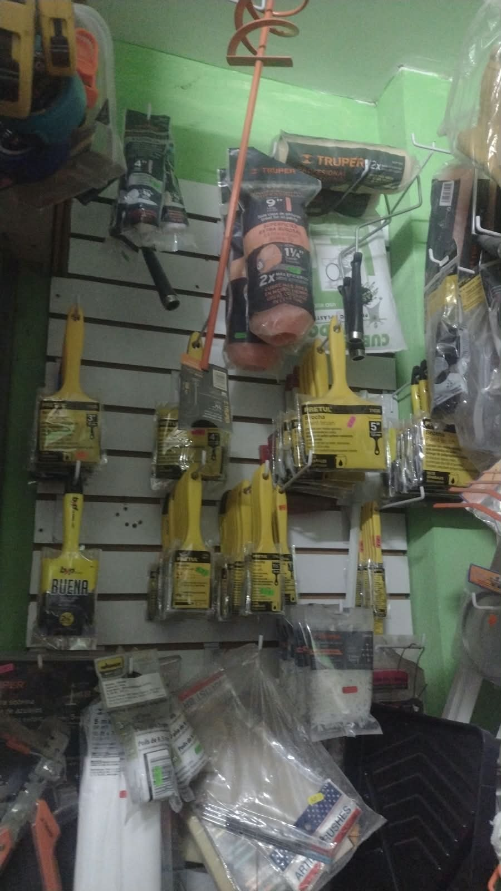
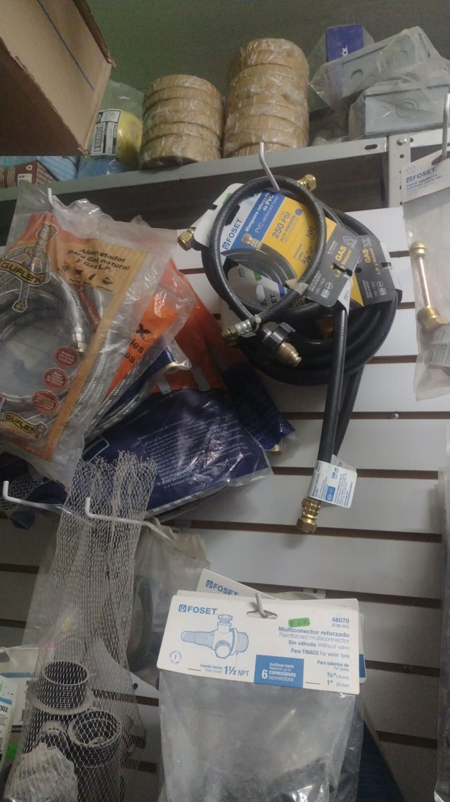
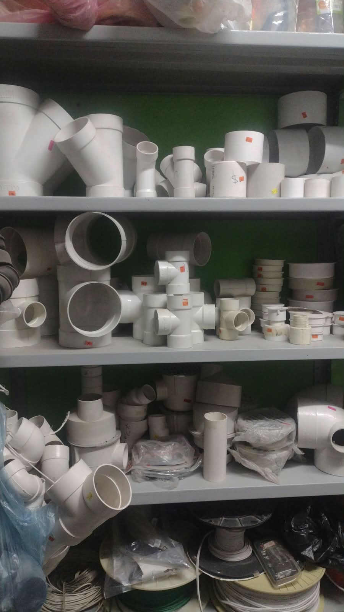
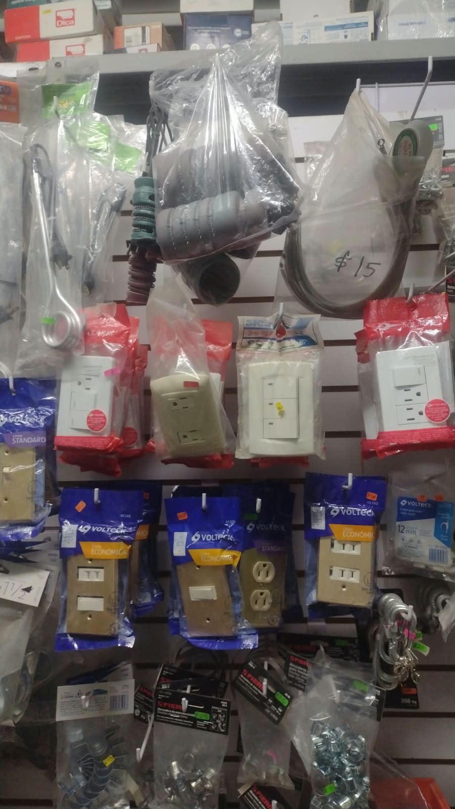
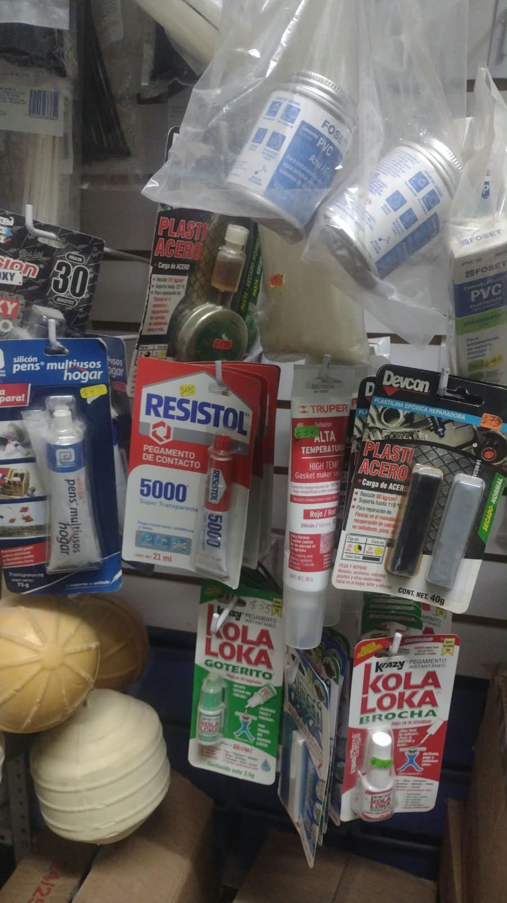
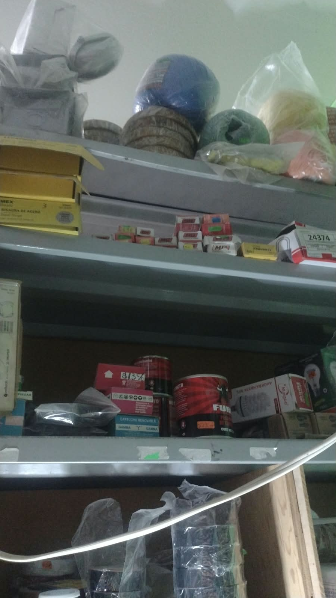

Herramientas
Herramientas para realizar trabajos de reparación, mantenimiento y construcción.
- Martillos
- Desarmadores
- Pinzas
- Llaves
¡Bienvenido a Tlapalería de Libras! Encuentra herramientas, pinturas, productos de plomería y material eléctrico para tus proyectos y reparaciones.
Estamos para ayudarte a encontrar los materiales que necesitas para hacer realidad tus proyectos.

En Tlapalería de Libras contamos con diferentes categorías de productos para ayudarte en tus trabajos de construcción, mantenimiento y reparación.
Herramientas para realizar trabajos de reparación, mantenimiento y construcción.
Productos para renovar, proteger y dar color a diferentes superficies.
Materiales y accesorios utilizados en instalaciones y reparaciones de agua.
Artículos básicos para instalaciones y mantenimiento eléctrico.
Consulta algunos de nuestros productos y sus precios. Los costos pueden variar según el producto y la presentación.
| Producto | Descripción | Precio |
|---|---|---|
| Martillo | Herramienta para trabajos generales. | $120.00 |
| Desarmador | Herramienta manual para tornillos. | $65.00 |
| Pintura vinílica | Pintura para interiores y exteriores. | $350.00 |
| Brocha | Accesorio para aplicar pintura. | $45.00 |
| Tubo PVC | Tubo para instalaciones de plomería. | $90.00 |
| Cinta teflón | Cinta para conexiones de tubería. | $15.00 |
| Foco LED | Foco para iluminación doméstica. | $55.00 |
| Apagador | Interruptor para instalaciones eléctricas. | $40.00 |
En Tlapalería de Libras queremos ayudarte a encontrar lo que necesitas para tus proyectos de construcción, mantenimiento y reparación. Además de ofrecer productos, buscamos brindarte atención y orientación para que puedas realizar tus trabajos de manera más sencilla.
Te orientamos para identificar las herramientas y materiales que pueden servirte según el trabajo que deseas realizar. Ya sea una reparación sencilla en casa o un proyecto de mayor tamaño, podemos ayudarte a encontrar opciones adecuadas.
Te ayudamos a elegir pinturas y accesorios para renovar tus espacios. Puedes encontrar opciones para diferentes superficies y conocer qué materiales podrías necesitar para preparar y pintar correctamente.
Contamos con productos que pueden ayudarte en reparaciones y trabajos de plomería, como conexiones, tuberías, llaves y accesorios. Te orientamos para identificar las piezas que necesitas.
Encuentra materiales y accesorios para instalaciones y reparaciones eléctricas, como cables, contactos, apagadores y otros productos. Te ayudamos a ubicar los materiales adecuados para tu proyecto.
Desde pequeños arreglos hasta mejoras en diferentes espacios de tu hogar, puedes encontrar productos útiles para mantenimiento, construcción y reparaciones. ¡Queremos ayudarte a que tus proyectos avancen!
Nos interesa que encuentres lo que buscas. Por eso, buscamos brindarte una atención amable, resolver tus dudas sobre nuestros productos y orientarte durante tu compra.
Conoce algunos de los productos y materiales que puedes encontrar en Tlapalería de Libras.









Ofrecer productos y herramientas de calidad para construcción, reparación y mantenimiento, brindando atención amable y asesoría a nuestros clientes.
Ser una tlapalería reconocida en nuestra comunidad por la calidad de sus productos, sus buenos precios y la confianza que ofrecemos a nuestros clientes
Agradecemos la confianza de las personas y negocios que nos prefieren. Trabajamos para ofrecer productos y atención que ayuden a nuestra comunidad.
Personas que buscan materiales y herramientas para sus reparaciones y proyectos en casa.
Personas dedicadas a la construcción y mantenimiento que necesitan materiales para su trabajo.
Colaboradores que nos ayudan a ofrecer variedad y calidad en nuestros productos.
"Encontré los materiales que necesitaba y recibí una atención amable."
"Es un lugar práctico para conseguir herramientas y productos para reparaciones."
"Me orientaron para encontrar lo que necesitaba para mi proyecto."
Los datos que escribas en el formulario (nombre, teléfono o correo y mensaje) se usan solo para responder tu consulta. No se venden ni se comparten con terceros. Puedes pedir que borremos tus datos escribiéndonos por los medios de contacto de esta página.